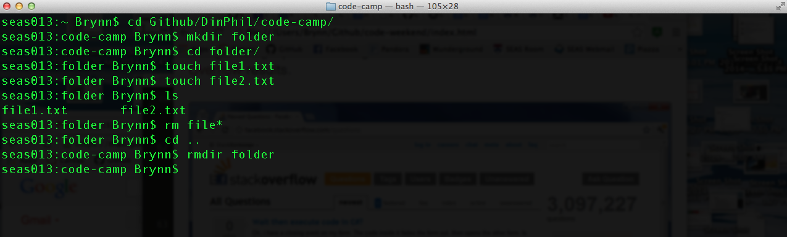

Code Camp
Learning the basics of real code
Code Camp is a workshop series hosted by the Dining Philosophers at the University of Pennsylvania to teach students real-world coding skills from scratch. These workshops are highly interactive and offer participants a lot of support in the form of mentors that help as participants code.
These workshops have been organized by the Dining Philosophers with the help of many talented individuals. Individual workshops will be credited to the people that made and ran them.
Intro to Git and Command Line
with Brynn Claypoole
Schdeuled for October 25th, 2014. The tutorial will run from 3 PM to 5 PM in McClelland. Check back for updated docs here soon.
What is command line?
Have you ever seen programmers, maybe in class, in the computer lab, or on TV, typing into a black box on their computer screens?
That box is known as a command line. Command line is a less visual way of interacting with your computer. In some ways, it’s like a “Finder” window. It allows you to open files and navigate through your directories. It’s also the interface for interacting with your computer in more complicated and technical ways. You can run processes and programs, ping Internet servers, and do a whole host of other things that require some technical knowledge.

This is what command line looks like on a Mac.
On Mac and Linux computers, you can access it by searching for the “Terminal” program. In Windows, it’s called “Command Prompt”. Be careful, because the languages used on these different operating systems are different. Macs use Unix, which is extremely similar to Linux. Windows machines have their own command prompt language that uses different syntax from Unix/Linux.
There are some basic commands you should be able to use:
ls(DIRon Windows) lists all the files in the current folder.cdallows you to change directories. For example,cd Documentswill move into the folder “Documents”, if there is such a folder in the current directory. You can usels(DIRon Windows) to check that your current folder contains “Documents”. To move up a directory, say back to where you were before you went into Documents, type incd ...mkdirallows you to make a folder. Somkdir Newmakes a folder named ‘New’.mv(moveon windows) will let you move files and folders. In Terminal you can domv ~/Desktop/MyFile.rtf /Volumes/Backup/MyFolderto move MyFile.rtf. On Windowsmove c:\windows\temp\*.* c:\tempwill move everything from C:\windows\temp to C:\temp. * works as a wildcard operator here.
Command line has some funky syntax that you’ll need to get used to:
So…I’m lost.
Understanding how to navigate in your command line can be weird if you’ve never done it before. I recommend moving around folders in command line while clicking around a Finder window. Perhaps start in your home directory (frequently represented with ~) and move into your Documents folder, both on command line and in Finder.
What are all of these dots for?
Dots can be used as shortcuts for certain commands. . is a shortcut referring to the folder you’re currently in. .. is the folder that contains the folder you’re currently in. For example, if you’re currently in a “Git Code Camp” directory within a “Fall 2014” folder, . would refer to “Git Code Camp” and .. to “Fall 2014”.
Regex sounds like a medication.
It’s not. Regex stands for “regular expression”, which is a notation typically used for searching. You mainly just need to worry about the *, which means “anything that looks like this”. For example, if you’re trying to move all .txt files in a folder, you can do it without manually moving each one. Just type in *.txt, and your command will apply to every file in that folder with a .txt ending.
Command line gets kind of tedious…
Yeah, we noticed. There are a few shortcuts you can use to make your terminal experience significantly more pleasant. You can frequently hit tab to autocomplete commands or file names. You can also use the arrow keys to move through your command history. For example, the up arrow replaces your current command with the one before it.
What is Git?
Git is a language used for source control.